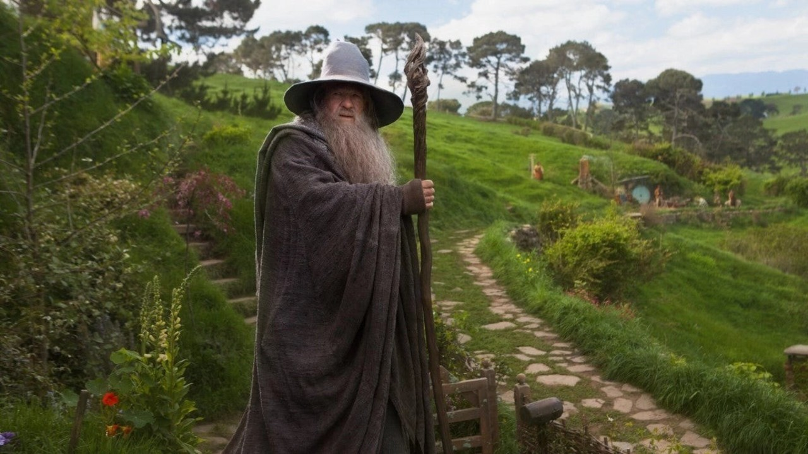
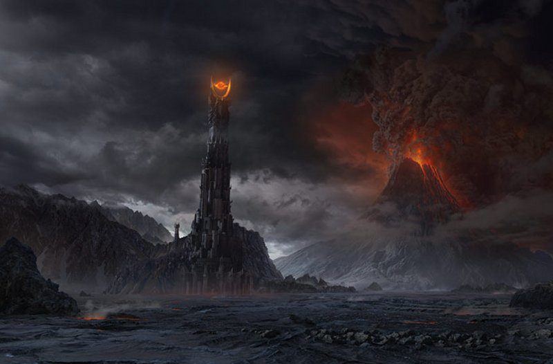

Si bien mi intención es hacer una charla introductoria en Tolkien, eso no hace este trabajo menos complicado ni hace del intento de transmisión una labor más simple. Se me ocurre que lo primero que debo hacer es darle un sentido al título que he elegido. Curiosamente este título me fue otorgado, yo no lo elegí, pero sí elegí hacerme cargo de él. Puedo pensar en este momento en tres maneras de justificar este título: La primera que se me ocurre es que introducirlos en Tolkien sería hacer un sumario de todas las razas que habitan el mundo creado por Tolkien y luego de ello hacer un resumen –siempre grosero- del desarrollo de la vasta historia que Tolkien creó para su mundo e incluir también –en la medida de mis posibilidades- alcances sobre las lenguas que él creó para los diversos pueblos de la Tierra Media. Una segunda manera para introducirlos en Tolkien sería hablar del Tolkien histórico, del personaje histórico y real que nació, vivió, produjo y murió. Del Tolkien humano más que del Tolkien leyenda, tal vez relatar algunas anécdotas jocosas y de esa manera introducirlos en quién fue Tolkien. Pero se me ocurre una tercera manera de introducirlos en Tolkien, esta tercera manera es tomar al Tolkien escritor y creador, y tratar de introducirlos en ese Tolkien. Me parece que de cierta manera este tercer Tolkien estaría entre el primero y el segundo, pero no por ello carece de un lugar propio sino todo lo contrario, reclama su propio lugar. Estas son las tres maneras que se me ocurren de poder introducirlos en Tolkien, no necesariamente sean las únicas tres maneras de hacerlo pero son las que se me ocurren ahora. Yo he decidido en esta oportunidad tomar al tercer Tolkien, el escritor y creador. Pido disculpas de antemano si alguien aquí, debido a mi título, esperaba encontrar a uno de los otros dos Tolkien. A ellos les pido por favor tengan la gentileza de aguardar a la ronda de preguntas, en donde estoy seguro podremos hacer algo más fluido, además que es usualmente, la ronda de preguntas, la parte más divertida, es finalmente donde a uno le dicen lo que quiere escuchar, o eso al menos, en el mejor de los casos. Bien, intentaré de una vez por todas Introducirlos en Tolkien. Espero me permitan el intento, y digo intento porque el fracaso siempre está en el horizonte, pero no por ello se deja de intentar. De la vasta historia de la Tierra Media que Tolkien nos legó, quiso el cruel destino que sólo pudiese darle forma terminada y publicable a dos obras: El hobbit y El Señor de los Anillos. Curiosamente, y es que no puedo alejarme por completo de los datos curiosos, luego de la publicación de El Hobbit, Tolkien quiso publicar el gran corpus mitológico del mundo que había creado, sin embargo sus editores pensaron que a nadie le interesaría un montón de historias en las que no aparecían hobbits, así que Tolkien decide hacerle una continuación a El Hobbit, una secuela, esa secuela es justamente El Señor de los Anillos. El Señor de los Anillos es una obra que, a pesar de estar en tres tomos nada pequeños, nos parecerá siempre demasiado corta a los amantes de la obra de Tolkien. Pero ella junto a El Hobbit nos permite encontrarnos con un estilo bastante curioso de narración.  Tolkien se propone así mismo no como el narrador o creador de estas historias sino como un traductor, traductor de qué, de El libro Rojo. Tolkien pretende hacernos creer que él ha encontrado un libro en el cual se han guardado las historias de un pasado legendario en una lengua ahora perdida y que lo que él está haciendo es traducir ese libro al inglés moderno. Teniendo esto como premisa debía ser muy cuidadoso con su manera de narrarnos las historias. Encontramos entonces que ambos libros se proponen escritos por los narradores más inverosímiles, los hobbits. Nos propone como narrador a los personajes menos informados de todos los acontecimientos de sus historias, a aquellos que han sido empujados a participar de los grandes hechos de su historia debido a la casualidad o el deseo de no abandonar a sus amigos en problemas, en ningún caso por deseos de aventuras, de conquistar grandes reinos o ganar inconmensurables tesoros. Si los narradores son los hobbits, Tolkien sólo podía dar en sus relatos lo que los hobbits hayan visto o conocido por ellos mismos o por los relatos de sus amigos, y además nos narraba los acontecimientos desde la perspectiva de los hobbits, de cómo ellos entendían lo que sucedía. De esa manera por ejemplo, en la primera parte de La Comunidad del Anillo, no se sabe absolutamente nada del destino de Gandalf y porqué no dio alcance a Frodo para ayudarlo a salir de la Comarca, sino hasta que Frodo llega a Rivendel y en el Concilio de Elrond el mismo Gandalf informa sobre la traición de Saruman y cómo este lo retuvo prisionero. Tampoco se sabe qué es lo que está haciendo o planeando el enemigo hasta que este no revela sus intenciones o alguien logra descubrir qué es lo que pretende. Teniendo que el libro ha sido redactado por los hobbits, Tolkien se encarga de hacer del libro francamente un relato interesante para los hobbits, de esa manera encontramos que las grandes batallas que se libran por la libertad de la Tierra Media no se encuentran relatadas en su totalidad ni en gran detalle, excepto la batalla del Abismo de Helm, en la que no participa ni un solo hobbit. Pero por el contrario la fiesta de Bilbo, acontecimiento que podríamos llamar de importancia menor para la historia de la Tierra Media, se encuentra relatada hasta el detalle desde los preparativos de la fiesta hasta la entrega del testamento posterior a la misma. Ya que esto, diría Tolkien, sería de gran interés para un hobbit. Del mismo modo el Saneamiento de la Comarca, y la Batalla de Delagua se encuentra bastante detallada aunque uno podría considerarla de una importancia menor en comparación con las grandes batallas que se libraron en Lorien, la de Erebor y el Bosque Negro, las cuales apenas fueron mencionadas.  Pero el que el libro esté escrito por los hobbits no lo hace menos interesante para los no hobbits, simplemente, a veces, un poco denso. El relato es a veces lento pero en otras es tenso, y de una rapidez tal que las páginas se suceden una a la otra con una facilidad que pareciese que se mueven solas o incluso que las páginas desapareciesen y que el libro se convierte en una suerte de ventana a través de la cual uno puede observar como estos acontecimientos se suceden uno tras otro sin interrupción alguna, uno puede quedar absorto de una manera asombrosa, no les contaré cuántas veces me he pasado los paraderos o se me han ido las horas de manera increíble. No es gratuito el hecho que Tolkien eligiese a los hobbits para ser los transmisores de su historia. Tomar al que menos sabe puede ser de mucha ventaja pues de la misma manera que nosotros, los lectores, requiere de mucha información que no posee conforme va avanzando en la aventura que le ha tocado vivir. Así que siempre está haciendo preguntas que para alguien mucho mejor informado serían probablemente innecesarias. Un problema, para los que queremos saber más historias de la Tierra Media es que al haber escrito los hobbits los libros, escribieron –como ya dije- lo que vivieron ellos mismos o lo que sus amigos les relataron, pero a fin de cuentas solo escribieron las historias que estaban relacionadas directamente con la de ellos, de esa manera dejaron muchas historias fuera de sus relatos, grandes acontecimientos de los que solo se escriben que llegaron como noticias pero no se indaga más sobre ellas. He mencionado hace un momento tres grandes batallas que se libraron: la de Lorien, la del Bosque Negro y la de Erebor. ¿Por qué no hay grandes relatos de estas? La explicación es sencilla en realidad, en ninguna de ellas participaron ni los hobbits ni sus amigos. Es curioso notar que en El Señor de los Anillos sólo hay relatos en los que aparece alguno de los nueve miembros de la Comunidad del Anillo. Y es que supuestamente los miembros de la Comunidad relataron a Frodo lo que les había sucedido luego de su separación durante el tiempo que vivieron juntos en Gondor, durante ese mismo tiempo llegaron las noticias sobre las grandes batallas libradas al oeste y el norte, por ello son mencionadas en el libro, de lo contrario tal vez ni siquiera hubiesen sido mencionadas. Para terminar sólo quisiera hacer referencia al reencuentro entre Gandalf y Bilbo. Es en verdad la mejor introducción que tiene un personaje en la obra de Tolkien, y esto es decir bastante. Lo que se dice es esto: “…Gandalf apareció de pronto. ¡Gandalf¡ Si sólo hubieseis oído un cuarto de lo que yo he oído de él, y he oído sólo muy poco de todo lo que hay que oír, estaríais preparados para cualquier especie de cuento notable. Cuentos y aventuras brotaban por dondequiera que pasara, de la manera más extraordinaria.” (J.R.R. Tolkien, 1937, El Hobbit, Una tertulia inesperada) Me parece que ahí Tolkien sí escribe como él mismo, en esa frase nos deja todo su sentir acerca de la historia que está empezando a relatar, acerca de su impotencia de no poder decirnos todo lo que ha imaginado, de todo aquello a lo que ha dado vida. Ese no es el reencuentro entre Gandalf y Bilbo sino el reencuentro entre Tolkien y toda su creación, es el momento preciso en que toda su creación se presenta ante él y, a pesar de su magnífica pluma se ve totalmente imposibilitado de contarnos todo, y toda esa mezcla de emociones, que tiene que liberar de alguna forma, la libera de esa manera. No había otra forma. O nos contaba la historia así como lo hizo, a través de lo hobbits, o no la contaba.